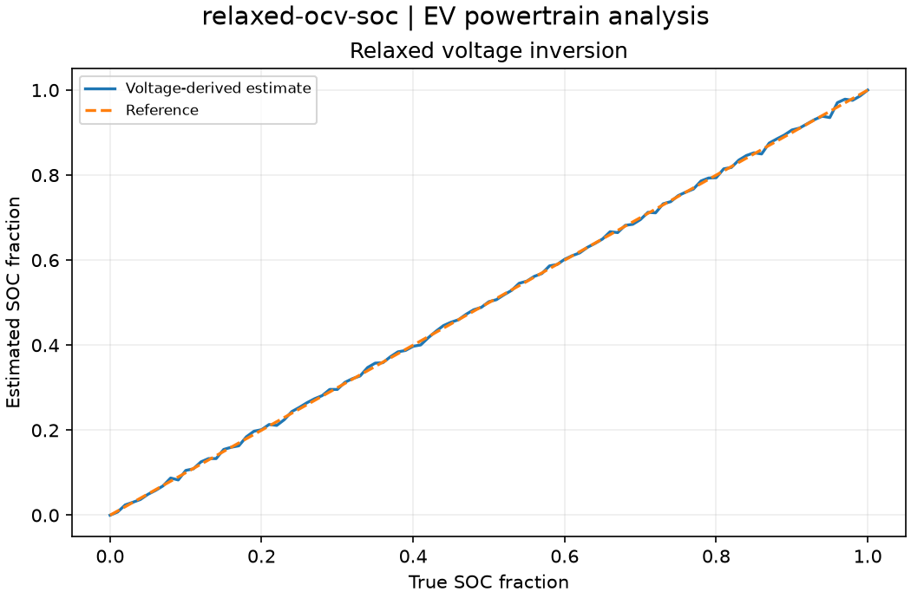

Reproducible EV powertrain analysis. Units and field components are printed on the scientific axes. peak d-q quantities use exp(+i omega t); terminal currents point into the protected line.
Sealed numeric archive | Summary CSV | Physical parameters | Run request | Source and environment

| clipped_samples | 2 |
|---|---|
| soc_rmse | 0.004631381629877477 |
These are simulations, not hardware measurements. Network-model, measurement, timing and statistical uncertainty require distinct convergence checks. Singular or unilluminated data use explicit masks.
Source revision: f89042618d0884ff741ae8772ede08dc1648c042.
Dirty checkout: False.
Configuration SHA-256: 8b8760c478bcbbefe5e975718acf7ceb7db6981e7d94825c2aad7569745d52fb.
Replay preserves original source and parameter provenance. SHA-256 manifests detect changed bytes; they are unsigned integrity records, not certificates of physical validity.